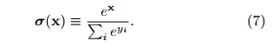
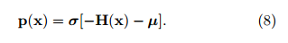
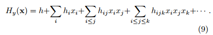
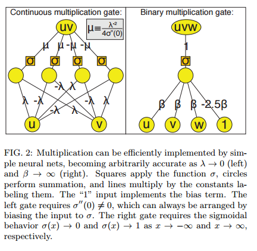
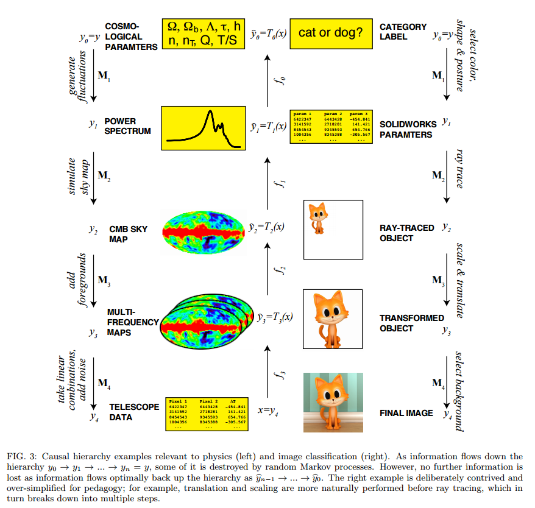

, 8 min read
Why does deep and cheap learning work so well?
Original post is here eklausmeier.goip.de/blog/2016/10-08-why-does-deep-and-cheap-learning-work-so-well.
Very interesting.
-- -- -- Quote -- -- --
Why does deep and cheap learning work so well Lin & Tegmark 2016
Deep learning works remarkably well, and has helped dramatically improve the state-of-the-art in areas ranging from speech recognition, translation, and visual object recognition to drug discovery, genomics, and automatic game playing. However, it is still not fully understood why deep learning works so well.
So begins a fascinating paper looking at connections between machine learning and the laws of physics - showing us how properties of the real world help to make many machine learning tasks much more tractable than they otherwise would be, and giving us insights into why depth is important in networks. It's a paper I enjoyed reading, but my abilities stop at appreciating the form and outline of the authors' arguments - for the proofs and finer details I refer you to the full paper.
A paradox
How do neural networks with comparatively small numbers of neurons manage to approximate functions from a universe that is exponentially larger? Take every possible permutation of the neural network, and you still don't get near the number of possibilities for the functions you are trying to learn.
Consider a mega-pixel greyscale image, where each pixel has one of 256 values. Our task is to classify the image as a cat or a dog. There are 2561,000,000 possible input images (the domain of the function we are trying to learn). Yet networks with just thousands or millions of parameters learn to perform this classification quite well!
In the next section we'll see that the laws of physics are such that for many of the data sets we care about (natural images, sounds, drawings, text, and so on) we can perform a "combinatorial swindle", replacing exponentiation by multiplication. Given n inputs with v values each, instead of needing vn parameters, we only need v x n parameters.
We will show that the success of the swindle depends fundamentally on physics...
The Hamiltonian connection between physics and machine learning
Neural networks search for patterns in data that can be used to model probability distributions. For example, classification looks at a given input vector x, and produces a probability distribution y over categories. We can express this as p(y|x). For example y could be animals, and y a cat.
We can rewrite p(y|x) using Bayes' theorem:
And recast this equation using the Hamiltonian Hy(x) = -ln p(x|y) (i.e., simple subsitution of forms). In physics, the Hamiltonian is used to quantify the energy of x given the parameter y.
This recasting is useful because the Hamiltonian tends to have properties making it simple to evaluate.
In neural networks, the popular softmax layer normalises all vector elements such that they sum to unity. It is defined by:

Using this operator, we end up with a formula for the desired classification probability vector p(x) in this form:

Where ? is the bias term, and represents the a priori distribution over categories before we look at any individual data. And the point to all of this is that:
This means that if we can compute the Hamiltonian vector H(x) with some n-layer neural net, we can evaluate the desired classification probability vector p(x) by simply adding a softmax layer. The ?-vector simply becomes the bias term in this final layer.
The key phrase being 'if we can compute the Hamiltonian vector'.
Real world properties that make ML practical
The good news here is that both physics and machine learning tend to favour Hamiltonians that are sparse, symmetric, low-order polynomials.
These Hamiltonians can be expanded as a power series:

If we can accurately approximate multiplication using a small number of neurons, then we can construct a network efficiently approximating any polynomial Hy(x) by repeated multiplication and addition.
It turns out we can approximate a multiplication gate arbitrarily well using the logistic sigmoid activation function (fancy name, but commonly used) σ(x) = 1/(1 + e-x). In fact, with this machinery, arbitrarily accurate multiplication can always be achieved using merely 4 neurons.

And with this building block,
For any given multivariate polynomial and any tolerance &eps; > 0, there exists a neural network of fixed finite size N (independent of &eps;) that approximates the polynomial to accuracy better than &eps;. Furthermore, N is bounded by the complexity of the polynomial, scaling as the number of multiplications required times a factor that is typically slightly larger than 4.
For general polynomials, we need multiple layers of the multiplication approximation to evaluate H(x). In the special case of bit vectors (binary variables) we can implement H(x) with only three layers.
So we have established that neural networks can approximate certain classes of Hamiltonians efficiently. And it turns out that these classes map very well onto situations we find in the world around us:
For reasons that are still not fully understood, our universe can be accurately described by polynomial Hamiltonians of low order d. At a fundamental level, the Hamiltonian of the standard model of particle physics has d = 4.
In many physical situations d is in the range 2-4. Furthermore, many probability distributions in machine learning and statistics can be approximated by multivariate Guassians, and hence have quadratic polynomial Hamiltonians. Even better, many situations have d=1 polynomials:
Image classification tasks often exploit invariance under translation, rotation, and various non-linear deformations of the image plan that move pixels to new locations. All such spatial transformations are linear functions (d = 1 polynomials) of the pixel vector x. Functions implementing convolutions and Fourier transforms are also d = 1 polynomials.
As well as low degree, locality and symmetry come to our aid as well.
Locality
A deep principle in physics is that things only directly affect what is in their immediate vicinity. This has the consequence that nearly all of the coefficients in equation 9 (the Hamiltonian power series expansion) are forced to vanish, and the total number of non-zero coefficients grows only linearly with n.
Symmetry
When the Hamiltonian obeys some symmetry (i.e., is invariant under some transformation) we further reduce the number of independent parameters required to describe it.
For instance, many probability distributions in both physics and machine learning are invariant under translation and rotation.... Taken together, the constraints on locality, symmetry, and polynomial order reduce the number of continuous parameters in the Hamiltonian of the standard model of physics to merely 32.
Hierarchies of generative processes (why deep is natural)
Next the authors turn their attention to the following question:
What properties of real-world probability distributions cause efficiency to further improve when networks are made deeper?
The answer they say, lies in the hierarchical structure of many complex structures. The physical world for example has elementary particles, atoms, molecules, cells, organisms, planets, and so on. Causally compex structures are frequently created through a distinct sequence of simpler steps.
These causal chains can be modelled by Markov chains, in which the probability distribution at the ith level of the hierarchy is determined from its causal predecessor alone.
Here are a couple of examples. Note that the chains can be followed in both directions (classification and prediction).

This decomposition of the generative process into a hierarchy of simpler steps helps to resolve the "swindle" paradox from the introduction: although the number of parameters required to describe an arbitrary function of the input data y is beyond astronomical, the generative process can be specified by a more modest number of parameters, because each of its steps can.
This discussion of hierarchy also puts me very much in mind of the intermediate feature representations learned by inner layers.
A deep neural network stacking these simpler layers on top of one another implements the entire generative process efficiently. "And though we might expect the Hamiltonians describing human-generated data sets such as drawings, text and music to be more complex than those describing simple physical system, we should nonetheless expect them to resemble the natural data sets that inspired their creation much more than than resemble random functions."
Deep learning classifiers need to reverse the hierarchical generative process (e.g. starting from image data, tell me whether it is a cat or a dog). The authors use information theory to show that the structure of the inference problem reflects the structure of the generation process. Physics has a systematic framework for distilling out desired information from unwanted noise, which is known as Effective Field Theory.
Typically, the desired information involves relatively large-scale features that can be experimentally measured, whereas the noise involves unobserved microscopic scales. A key part of this framework is known as the renormalization group (RG) transformation.
This theory applies in the case of supervised learning (and not, say the authors, to unsupervised learning, contrary to other claims in the literature). See also: Comment on "Why does deep and cheap learning work so well?" As for me, I'm certainly not qualified to judge!
The costs of flattening (why deep is effective)
We've seen that we can stack efficient neural networks on top of each other to obtain an efficient deep neural network for approximating p(x|y). But are there shallower networks that would be just as good or better?
The authors discuss a class of no-flattening theorems. The results show that when you flatten the layers, you may need many more neurons. For example, a flat network with 4 neurons in the hidden layer can multiply two variables together (as we saw earlier). A flat network with one hidden layer needs 2n neurons to multiply n variables. But a deep network can do the same task using only 4n neurons with n copies of the multiplication gate arranged in a binary tree with log2n layers.
For example, a deep neural network can multiply 32 numbers using 4n = 160 neurons, while a shallow one requires 232 = 4,294,967,296 neurons. Since a broad class of real-world functions can be well approximated by polynomials, this helps explain why many useful neural networks cannot be efficiently flattened.